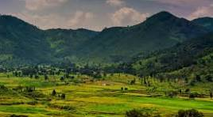

Araku Valley, located in Andhra Pradesh, India, is a serene hill station known for its lush green
landscapes, coffee plantations, and pleasant climate. Nestled in the Eastern Ghats, the valley offers
breathtaking views of rolling hills, dense forests, and vibrant flora and fauna. Popular among nature
lovers and adventure seekers, Araku is ideal for trekking, camping, and exploring tribal culture. The
region is also famous for its organically grown coffee, showcased at the Coffee Museum. Araku’s
picturesque beauty, combined with its tranquil environment, makes it a must-visit destination for those
seeking a peaceful retreat amidst nature.
Borra Caves
